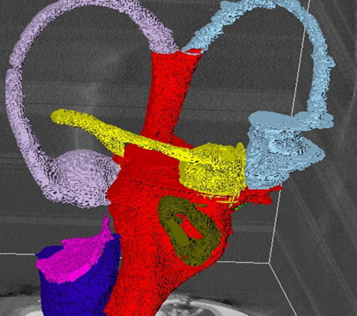

Vestibular System
Our inner ear has another very important part: the vestibular system. The vestibular system is our organ for balance. It has a very unique shape, with three loops running in 90 degree angles. These loops, together with two more structures inside, sense our head position and motion.

Three Loops of our Balance System: This is microCT model of our balance system – three loops called the semi-circular canal, are colored separately in pink, yellow and blue. Try our inner ear 3D model to see how three loops connect to the cochlear spirals.
Cells inside our balance organ: This is a microscopic image showing part of our balance organ. Blue circles are cell nuclei. Green are cells that respond to our body’s movement. Red is nerve fiber for balance. There are much research to be done to understand how these cells work together.